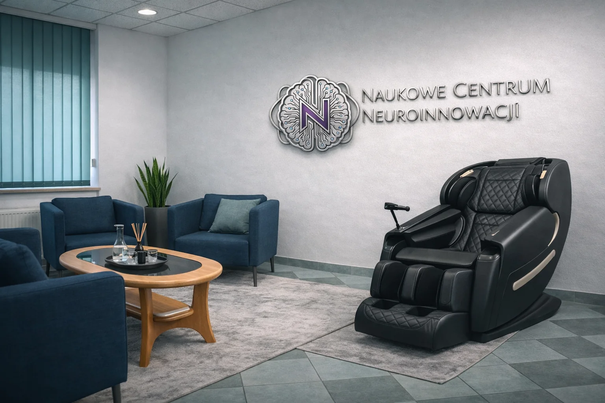

Psychologist in Wrocław · in person and online
You don’t have to have
everything figured out.
We are a modern center in Wrocław where psychology meets technology. But we always start with a conversation: about what you are going through, or what your child or someone close to you is facing. Here, you can talk in English.
Prefer to talk? Call +48 600 608 333
Therapy · phobias · kids & learning · ADHD and autism · VR and biofeedback

A SPACE FOR YOUR STORYYou first.
Then the method.
FROM WHERE YOU ARE TO THE RIGHT HELP
What feels hardest
right now?
We start with what you bring. Together we choose the kind of support that fits you, after we talk about your needs.
01 / EMOTIONSIt’s hard right now.
I don’t want to go through it alone.
Anxiety, overload, low mood or a life crisis. Individual psychotherapy with Daria gives you a safe space to look at what is happening and decide on next steps.
Book a visit ↗Individual therapy: 250 zł02 / RELATIONSHIPSWe want to hear each other.
And feel close again.
Recurring conflicts, distance and communication problems. Couples therapy gives you room to look at your relationship with the help of a psychotherapist.
Book a visit ↗Couples therapy: 320 zł / 90 min03 / ADHD AND AUTISMI want to understand
how my mind works.
ADHD, autism, overload or trouble organizing your day. Psychoeducation helps you understand your needs and build everyday strategies that actually work.
Book a visit ↗Psychoeducation: 300 zł / up to 60 min04 / FEARS AND PHOBIASI don’t want fear
to make my choices.
Fear of flying, spiders, insects, heights or situations you avoid more and more. We start with a conversation, then, if it fits, practice step by step in VR.
Book a visit ↗VR session: 350 zł05 / FOCUS AND TENSIONIt’s hard to focus.
It’s hard to slow down.
We look at attention, tension and how you function day to day. When it serves your goal, we add HRV or EEG measurement, biofeedback or a VR session.
Book a visit ↗Conversation with measurement: 450 zł06 / MIGRAINE AND SENSITIVITYI need less tension.
And more room to rest.
With migraine or high sensitivity to light and sound, we talk about everyday strain and ways to support rest and regulation. This complements, not replaces, medical care.
Book a visit ↗Consultation: 350 zł
FEARS, PHOBIAS AND AVOIDANCE
Small steps.
More freedom.
Fear doesn’t go away because someone says “there’s nothing to be afraid of.”
When your heart races and your body goes into alarm mode, logic stops working. Your fear, whether of flying or of spiders, is real and deserves respect, not shame. First we build a sense of safety. Then, at your own pace and in a controlled setting, we work with whatever has been taking away your freedom.
1Understanding your fear
We talk about what triggers your fear and what you avoid because of it. Arachnophobia is the fear of spiders; similar difficulties can involve insects, heights, flying or public speaking.
2Practicing at your pace
Exposure means gradually getting used to what scares you. VR lets us recreate selected situations and set the difficulty level together with you. You can ask for a break at any time.
3Bringing it into real life
The goal is more freedom outside the office. We talk about your reactions, track your progress and plan next steps, including everyday situations.
BACKED BY RESEARCH
A virtual setting. Real work with fear.
Clinical studies support VR exposure therapy for specific phobias. That is the basis for choosing the method, not a promise of the same result for everyone. We discuss the scenario and who will lead your sessions before you start.
HELP FOR YOU, YOUR CHILD AND YOUR FAMILY
Learning without fear.
At your child’s pace.
Numbers and letters should never take away a child’s sense of self-worth.
Dyscalculia or trouble focusing is not laziness or lack of ability. We know how hard it is to watch a child lose confidence over homework. Without rushing and without judgment, we help ease that pressure and find a way of learning that really works.
TUTORING WITH A PSYCHOLOGIST IN THE BACKGROUNDWe teach the subject. And we remember a person is learning.
Our tutoring is more than reviewing material. A psychologist also keeps an eye on the process, because trouble with math or focus is rarely only about knowledge. Often there is stress, fear of grades or simply a different way of learning. Ask us about sessions in English.
DYSCALCULIAMath without freezing up at the board
Dyscalculia is a different way of processing numbers, not a lack of intelligence. We practice the number line, spatial thinking and everyday counting, and add VR exercises when it fits.
ADHD, THE FULL PICTUREFrom the first question to everyday strategies
A conversation, a path to diagnosis, then concrete support: attention exercises and psychoeducation for the child, for adults and for parents who want to understand more.
Our programs and materials are developed under the academic supervision of Prof. Sebastian Kraszewski, who has been teaching university students for years.
INNOVATION YOU CAN FEEL
Sit back.
We’ll tailor the rest to you.
Technology is a bridge for us, never a goal in itself. In NCNI.System we combine a VR environment, HRV measurement and the comfort of a Zero Gravity chair in an individual session led by a specialist. Instead of choosing a device, you choose the goal of the session.
1A setting that helps you focus
VR takes you into a chosen scene where you can practice attention or relaxation, away from everyday distractions.
2Insight into your body’s response
HRV measurement complements the specialist’s observation. Depending on the goal, we also use EEG and biofeedback.
3Comfort and a pace that suits you
The Zero Gravity chair gives you full support in a reclined position. We adjust intensity and duration to your sensitivity.
Sessions are supportive. They do not replace psychotherapy or medical treatment, and not every element is used in every session.
MEET OUR TEAM
You know
who you’ll meet.
Daria is a psychotherapist who helps with emotions and relationships. Sebastian is a professor who explains how technology can support you or your child. Both work in English.
PSYCHOLOGY AND PSYCHOTHERAPY
Daria Cerazy
Psychologist, psychotherapist
I’ve been practicing psychotherapy since 2018, under regular supervision. I work with adults and couples, in Polish and English, in person in Wrocław and online. I also teach psychology at WSB Merito University.
- Psychotherapy since 2018
- Supervision
- PL / EN
- Adults and couples
EXPERT CONSULTATIONS AND MEASUREMENT
Sebastian Kraszewski
Professor at Wrocław University of Science and Technology · Scientific Director of NCNI
I’ve been teaching students and doing research for years. At NCNI, I help you understand what is happening in your body and mind, and together we check whether technology such as VR, EEG or HRV biofeedback can really help you or your child. I hold consultations in English, French and Polish.
- Professor at PWr
- Years of university teaching
- VR, EEG, HRV
- PL / EN / FR
My expert consultations are separate from psychological consultations and psychotherapy.
NO NEED TO CHOOSE A METHOD
What does
the first step look like?
You don’t have to decide on therapy or a series of sessions right away. Let’s start by figuring out what you need.
1Tell us what brings you here
Call or email us. If you’re not sure which visit to choose, we’ll help you pick the right first appointment.
2Let’s get to know your situation
The first consultation is a space for your questions, your expectations and a conversation about possible ways of working.
3Let’s plan the next steps
That might be therapy, psychoeducation, further assessment or individual supportive sessions. We discuss scope and costs before we begin.
CLEAR PRICES, UP FRONT
Sessions in English
and what they cost.
Prices are based on the NCNI price list effective October 1, 2026. We confirm the type of visit and availability in English when you book.
Psychotherapy with Daria
- Individual psychotherapy in Englishsession length confirmed when booking
- 250 zł
- Couples therapy in English90 min
- 320 zł
With Sebastian
- Expert consultationup to 60 min · written report and recommendations · EN / FR / PL
- 450 zł
- Follow-up visitup to 60 min
- 350 zł
- Conversation with HRV / EEG measurementup to 60 min · report and discussion
- 450 zł
- Psychoeducation for adults with ADHD / autismup to 60 min · everyday strategies
- 300 zł
- Individual VR sessionup to 50 min · scope tailored to your needs
- 350 zł
- NCNI.System sessionup to 60 min · VR, HRV and Zero Gravity chair
- 350 zł
- Individual EEG / HRV biofeedback sessionup to 50 min
- 350 zł
BEFORE YOUR FIRST VISIT
You might have
some questions.
I don’t know which visit to choose.
Email or call us and briefly tell us what you’re looking for. You don’t have to pick a method yourself. For emotional difficulties, start with psychotherapy with Daria. For measurement, phobias or learning, start with a consultation with Sebastian.
Do I have to commit to therapy at the first visit?
No. The first visit is a chance to understand your situation and talk about options. You decide about further sessions after we discuss goals, format and costs.
Can we meet online?
Psychotherapy is available in person and online. Sessions with measurement and technology take place in our Wrocław office.
Does a conversation with measurement replace a diagnosis?
No. HRV or EEG complement conversation and observation. If a psychological assessment or a medical consultation is needed, we plan it as a separate step.
How do I cancel a visit?
Under the NCNI price list, cancellation is free up to 24 hours before your appointment. A later cancellation is charged at the price of the visit.